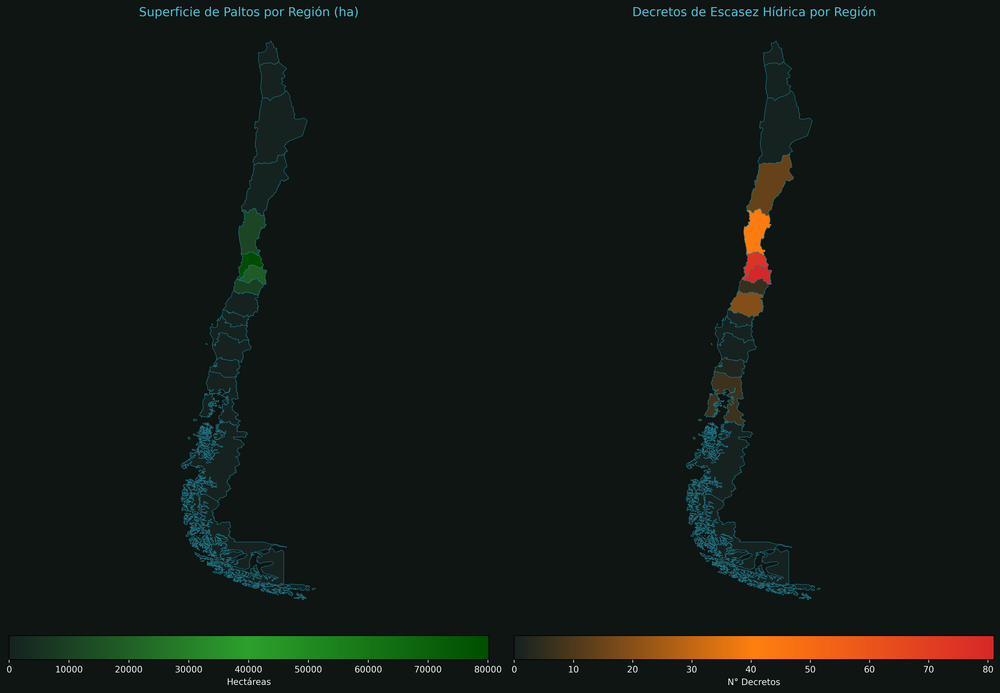

Producción, exportación y escasez hídrica decretada. Una mirada sobre cuánta agua carga esta agroindustria de exportación frente a las comunidades que dependen de camión aljibe.
↓ Scrollea para ver cada visualización
Compara el agua embebida en la producción de palto con la ración mínima diaria de agua para las personas que dependen de camión aljibe.
Comparativa geográfica entre la concentración de hectáreas plantadas de palto y la cantidad de decretos de escasez hídrica por región.
